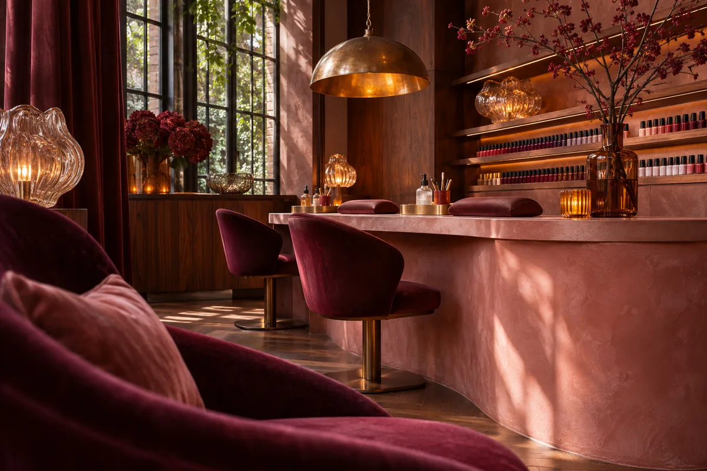

Маникюр
Аппаратный и комбинированный маникюр с покрытием, укреплением или без цвета.
Аппаратный и комбинированный маникюр с покрытием, укреплением или без цвета.
Уход за пальцами и стопами, обработка и покрытие по желанию.
Френч, градиент, тонкая графика и индивидуальные эскизы.
Коррекция формы, наращивание и укрепление натуральной пластины.
Форма, окрашивание и укладка с подбором интенсивности цвета.
Пилинг, маска, массаж кистей и завершающее увлажнение.
Выберите категорию и сравните продолжительность и примерную стоимость.
Показано 12 из 12
Маникюр
45 минут · Обработка формы, кутикулы и уход за кожей рук.
Маникюр
75 минут · Однотонное покрытие и уход за кутикулой.
Маникюр
90 минут · Выравнивание и укрепление натуральных ногтей.
Педикюр
45 минут · Обработка пальцев, форма и полировка без покрытия.
Педикюр
75 минут · Уход за стопой и пальцами с однотонным покрытием.
Педикюр
90 минут · Полный педикюр, мягкий пилинг и увлажняющая маска.
Дизайн и моделирование
20 минут · Дополнение к услуге маникюра.
Дизайн и моделирование
30 минут · Эскиз и дизайн до четырёх ногтей.
Дизайн и моделирование
120 минут · Наращивание, выравнивание и однотонный цвет.
Уход и брови
45 минут · Подбор оттенка, коррекция пинцетом и укладка.
Уход и брови
55 минут · Фиксация направления волосков и завершающий уход.
Уход и брови
25 минут · Пилинг, маска, массаж и крем.

Выберите процедуру. В демонстрации можно проверить путь до подтверждения времени.
Да. При выборе услуги можно уточнить снятие предыдущего покрытия до начала процедуры.
Для сложного дизайна стоит заложить дополнительное время. Укажите желаемое настроение или покажите свой эскиз.
Маникюр можно сочетать с уходом или оформлением бровей. Продолжительность рассчитывается по выбранным услугам.